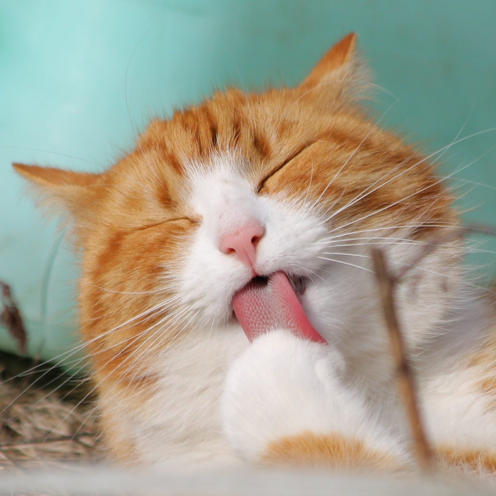
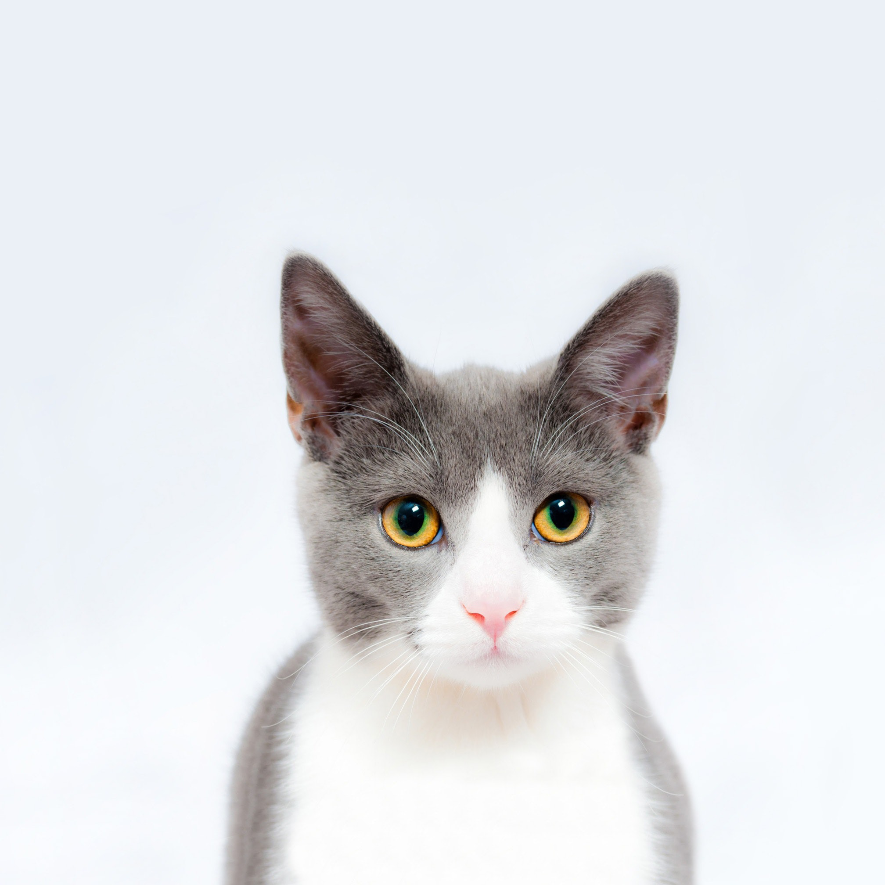

Adopt
All of our cats here at Café Meow are up for adoption. You can come in and meet them before you decide who to take home! Our adoption fee is $75.00 and you must fill out an application.
Pumpkin

Pumpkin is a shy, 9 year old cat relinquished to us with his brother Rowdy when their owner was down on his luck. He tends to keep to himself and hides in the open cat room most of the time. He doesn't pick any fights with the other cats, but he doesn't curl up and hang out with them either. Pumpkin hasn't been exposed to dogs or children. He would do best in a home that is quiet and will let him adjust in his own time. If you feel like you might be that home, stop in to visit with Pumpkin and fill out an adoption application.
Tapioca

Tapioca was relinquished to us when her owner found out that she was daibetic. They didn't feel that they could give her the care that she needed to treat this disease. Tapioca receives twice daily insulin injections to control her diabetes. Her new owners will know that she will have to come in routinely for blood sugar checks as well as incur the cost of insulin/syringes for her care. Tapioca is a shy girl, but does warm up in time. She was raised in a household with a child who is now grown and she also gets along well with other cats. If Tapioca's needs aren't too much for you to handle, stop in to visit with this sweet diabetic girl.
Mac

Mac is a super handsome, awesome kitty. He is between two and three years old and can't wait to find his forevever home. All cat adoptions include spay/neuter, microchip (and registration), vaccinations (including rabies if 16 weeks or older), FIV/FELV testing, flea treatment, and de-worming. Stop by the shop today to meet your new best friend!